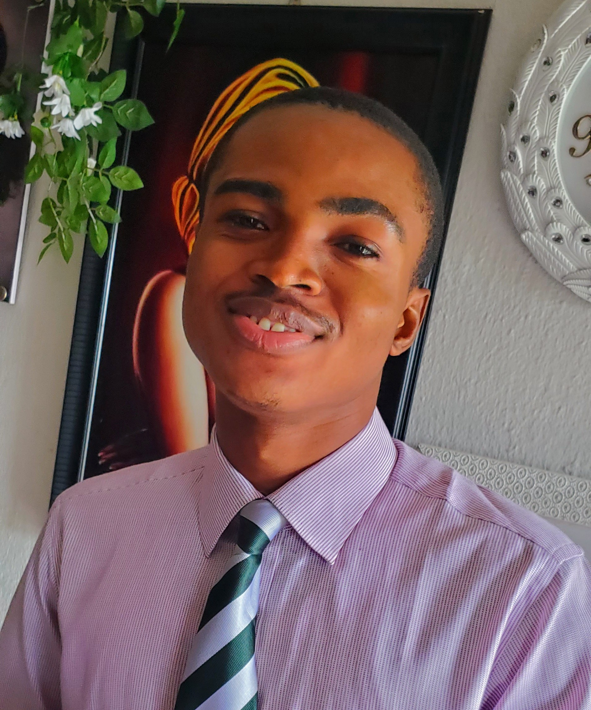

|  | Onyia Miracle ChibuikeI am Miracle Chibuike, and this is my first experience at Oluaka development programme(ODP). |
I am Miracle. I am writing to test my knwoledge on what i have learnt already with Angela in Udemy in conjuction with
Oluaka development programme(ODP)
The most important fact for me in any job that I am being employed in is to accomplish it
with all confidence.
I strive to use my computer skills to create and develop a platform
where computer task will be achieved effectively.
Whenever there is a need to improve in
my work or find myself lacking some knowledge or skills in the work that I am to do.
I
will be very happy to learn something new and adapt to the current changes, hence it
enhances my career. Meanwhile,
I want to be an integral part of a competitive work
environment, which would help me to grow, both the intellectual and front,
thereby
contributing to the growth and success of the organization to the best of my ability.
Solid Foundation Secondary School, Izombe Oguta LGA
2008-2014
Amakpuruedere Primary School, Izombe Oguta LGA
2014-2020
Noble Computer Institute
2021
| Company Name | Coasn Businessa Center |
|---|---|
| Address | No 39 Mbaise Road, Owerri Imo state. |
| Position | Computer Operator |
| Year | 2021-2022 |